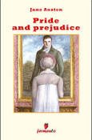
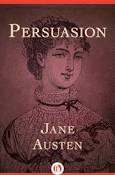
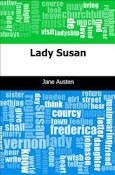
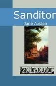

Jane Austen's Works
- 
- 
- 
- 
Jane Austen's Biography
(1775–1817)
Jane Austen was a Georgian era author, best known for her social commentary in novels including Sense and Sensibility, Pride and Prejudice, and Emma.
Synopsis
Jane Austen was born on December 16, 1775, in Steventon, Hampshire, England. While not widely known in her own time, Austen's comic novels of love among the landed gentry gained popularity after 1869, and her reputation skyrocketed in the 20th century. Her novels, including Pride and Prejudice and Sense and Sensibility, are considered literary classics, bridging the gap between romance and realism.
Early Life
The seventh child and second daughter of Cassandra and George Austen, Jane Austen was born on December 16, 1775, in Steventon, Hampshire, England. Jane's parents were well-respected community members. Her father served as the Oxford-educated rector for a nearby Anglican parish. The family was close and the children grew up in an environment that stressed learning and creative thinking. When Jane was young, she and her siblings were encouraged to read from their father's extensive library. The children also authored and put on plays and charades.
Over the span of her life, Jane would become especially close to her father and older sister, Cassandra. Indeed, she and Cassandra would one day collaborate on a published work.
In order to acquire a more formal education, Jane and Cassandra were sent to boarding schools during Jane's pre-adolescence. During this time, Jane and her sister caught typhus, with Jane nearly succumbing to the illness. After a short period of formal education cut short by financial constraints, they returned home and lived with the family from that time forward.
Literary Works
Ever fascinated by the world of stories, Jane began to write in bound notebooks. In the 1790s, during her adolescence, she started to craft her own novels and wrote Love and Freindship [sic], a parody of romantic fiction organized as a series of love letters. Using that framework, she unveiled her wit and dislike of sensibility, or romantic hysteria, a distinct perspective that would eventually characterize much of her later writing. The next year she wrote The History of England..., a 34-page parody of historical writing that included illustrations drawn by Cassandra. These notebooks, encompassing the novels as well as short stories, poems and plays, are now referred to as Jane's Juvenilia.
Jane spent much of her early adulthood helping run the family home, playing piano, attending church, and socializing with neighbors. Her nights and weekends often involved cotillions, and as a result, she became an accomplished dancer. On other evenings, she would choose a novel from the shelf and read it aloud to her family, occasionally one she had written herself. She continued to write, developing her style in more ambitious works such as Lady Susan, another epistolary story about a manipulative woman who uses her sexuality, intelligence and charm to have her way with others. Jane also started to write some of her future major works, the first called Elinor and Marianne, another story told as a series of letters, which would eventually be published as Sense and Sensibility. She began drafts of First Impressions, which would later be published as Pride and Prejudice, and Susan, later published as Northanger Abbey by Jane's brother, Henry, following Jane's death.
In 1801, Jane moved to Bath with her father, mother and Cassandra. Then, in 1805, her father died after a short illness. As a result, the family was thrust into financial straits; the three women moved from place to place, skipping between the homes of various family members to rented flats. It was not until 1809 that they were able to settle into a stable living situation at Jane's brother Edward's cottage in Chawton.
Now in her 30s, Jane started to anonymously publish her works. In the period spanning 1811-16, she pseudonymously published Sense and Sensibility, Pride and Prejudice (a work she referred to as her "darling child," which also received critical acclaim), Mansfield Park and Emma.